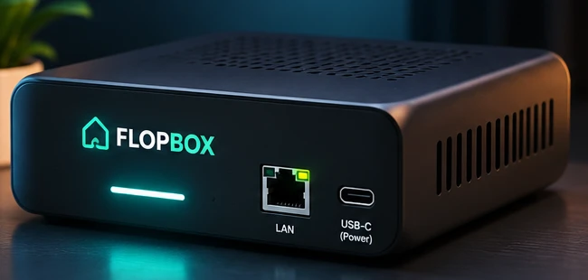
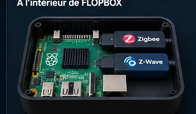

Branchez FLOPBOX
Connectez l'alimentation USB-C et le câble Ethernet au réseau domestique.
Un boîtier compact à brancher en USB-C et Ethernet. Zigbee et Z-Wave intégrés à l’intérieur du futur produit, pour piloter les appareils compatibles depuis une seule interface.
Votre maison, simplement.
Aperçu conceptuel de l'interface · Données fictives

Notre objectif : un boîtier épuré qui se raccorde à votre réseau par Ethernet et s'alimente en USB-C. Les adaptateurs Zigbee et Z-Wave sont logés à l'intérieur — rien ne dépasse.
Conception en cours : forme, dimensions, interfaces et performances radio seront confirmées après prototypage et tests.
Connectez l'alimentation USB-C et le câble Ethernet au réseau domestique.
Ajoutez les équipements réellement compatibles depuis l'interface FLOPBOX.
Pilotez lumières et prises, organisez les pièces et lancez vos scénarios.
Un cœur Raspberry Pi et des adaptateurs radio Zigbee/Z-Wave prévus dans le boîtier. Le logiciel FLOPBOX masque les outils techniques pour laisser place à une expérience plus simple.
Illustration d'intention : composants et intégration interne non contractuels.

FLOPBOX réunit plusieurs technologies domotiques dans un portail pensé pour les habitants, tandis que les services techniques restent en arrière-plan.
Retrouvez les équipements de votre maison, organisés par pièce.
Déclenchez des actions groupées depuis un seul espace.
Une base ouverte à plusieurs protocoles, avec des compatibilités à vérifier par appareil.
Voici les fonctions du prototype et celles encore en validation.
FLOPBOX possède aujourd'hui un prototype logiciel opérationnel sur Raspberry Pi. Le boîtier présenté sur cette page est un rendu conceptuel, pas une photographie du produit fabriqué. Nous travaillons encore sur la compatibilité des appareils, les tests de fiabilité, la sécurité et la version matérielle finale.
Nous annoncerons les prix, les caractéristiques définitives et une date de disponibilité seulement lorsqu'ils seront établis.
Interface, Zigbee et scénarios de base
Matter, compatibilité, sécurité, sauvegardes
À annoncer après les essais
Non. Ce sont des rendus conceptuels du futur produit. Son apparence, ses ports et l’intégration radio pourront évoluer.
Non. FLOPBOX est actuellement un prototype logiciel en développement ; le boîtier présenté est un concept. Vous pouvez demander à être informé du lancement.
Non, aucune compatibilité universelle n'est garantie. Les technologies et appareils pris en charge seront précisés après les tests.
L'objectif est de privilégier les fonctions locales. Certaines intégrations et fonctions distantes pourront nécessiter Internet.
Non. Il s'agit d'une simple demande d'information, gratuite et sans engagement d'achat.
Recevez les actualités du projet et soyez averti lorsque les premiers tests utilisateurs seront ouverts.